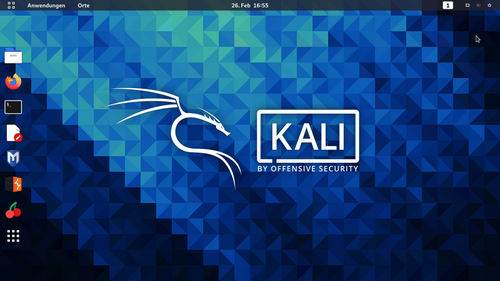

Réalisation d'un audit de sécurité complet (Boîte Noire, Grise et Blanche) sur une application critique de gestion de mots de passe d'entreprise, combinant tests d'intrusion et analyse approfondie de la base de données.
● Situation
Nécessité d'évaluer la robustesse d'un coffre-fort de secrets interne hautement exposé face aux risques d'intrusions externes, de compromissions de comptes et de fuites de données.
● Tâche
L'objectif était de cartographier l'intégralité des surfaces d'attaque, d'auditer de manière rigoureuse la configuration des jetons de session (JWT), d'évaluer l'étanchéité de la base de données et de vérifier la conformité RGPD globale du système.
● Action
Déploiement d'une méthodologie OWASP complète sous un environnement contrôlé (Kali Linux) :
- Reconnaissance & Payloads : Utilisation d'outils phares comme Burp Suite et Nmap pour la cartographie réseau et l'injection ciblée de payloads.
- Scripting sur-mesure (PoC) : Développement d'un script d'infostealer personnalisé pour valider de façon concrète un concept d'exfiltration via des canaux distants (Webhooks Discord et tunnels Ngrok).
- Analyse Boîte Blanche : Audit approfondi du dump SQL directement au niveau de la structure de stockage pour déceler les faiblesses logiques.
● Résultat
Identification claire de failles architecturales majeures, notamment l'absence de mécanisme Zero-Knowledge, des jetons de session stockés de manière vulnérable et des fuites d'informations nominatives. Cet audit a donné lieu à la rédaction d'un rapport professionnel officiel, accompagné de préconisations de remédiations prioritaires (chiffrement Client-Side, balises HttpOnly, implémentation de Padding).
Cartographie d'Audit — Script & Traces OWASP

● Suivi & Posture Cyber
L'implémentation des remédiations préconisées fait l'objet d'un suivi régulier pour valider l'étanchéité du coffre-fort face aux nouvelles méthodologies d'attaques et durcir la politique de gestion des accès.